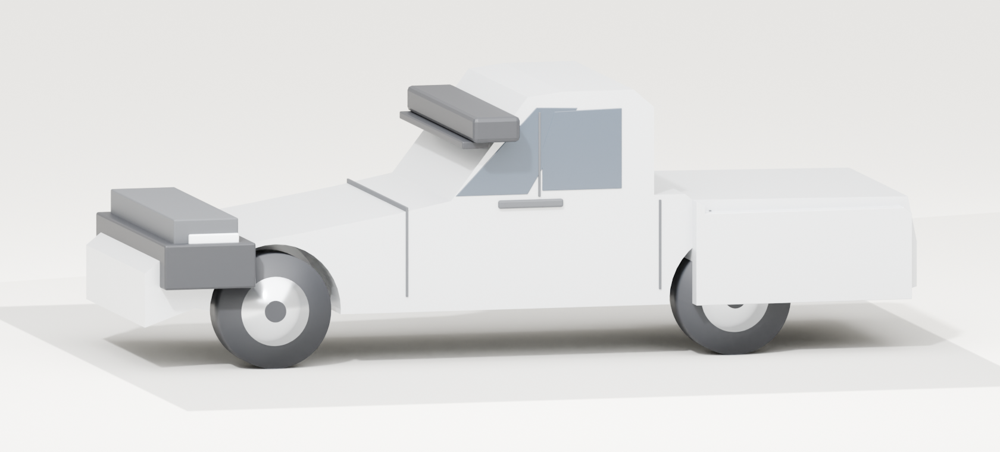
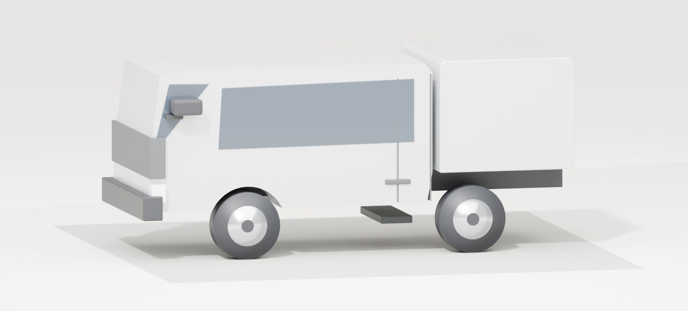
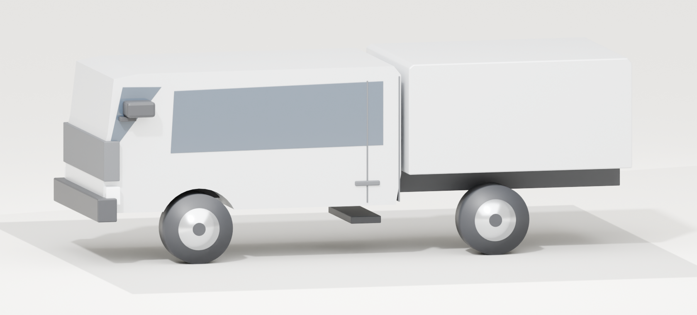
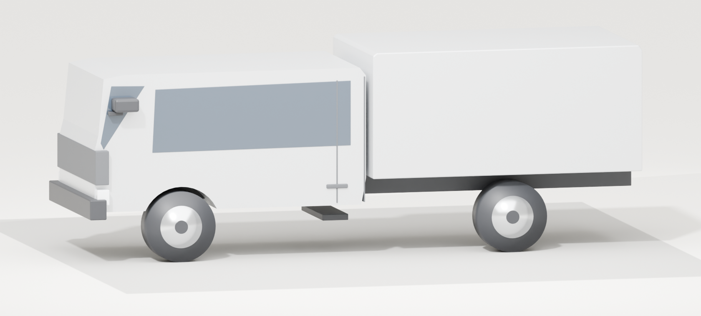

Isuzu truck renders — review sheet
Four vehicles modelled in Blender from Isuzu's published dimensions, rendered with
Cycles. These are the raw vehicle renders, before the clickable zone overlay
goes on and before any page rebuild. Reload this page to pick up new renders —
the background job is still refining them.
D-Max
Pickup / LCV · 5.265 m long · 1.870 m wide · 1.785 m high ·
3.125 m wheelbase · 0.905 m front overhang

N-Series light (NLR)
Cab-over light truck · 4.730 m long · 1.815 m wide ·
2.195 m high · 2.475 m wheelbase

N-Series heavy (NMR)
Cab-over medium truck · 6.020 m long · 1.995 m wide ·
2.265 m high · 3.345 m wheelbase

F-Series (FRR)
Cab-over heavy truck · 7.255 m long · 2.170 m wide ·
2.585 m cab height · 4.360 m wheelbase

What I can see, and what needs your call.
- The front faces are blank. Headlights and grille are modelled but sit
inside the body volume, so you see a plain panel where the face should be. This
is a bug and it is the main reason the cab-overs read as generic box trucks.
- The D-Max cab is too upright. The windscreen rake is nearly vertical and
the bonnet is long and flat, so it reads as a light truck with a box on the back
rather than a pickup. This is the weakest of the four.
- The cab-overs have the right proportions but nothing identifies them:
no grille shape, no badge, no windscreen contrast, flat cab sides.
- Wheels are off. Rims too large and too bright; tyres read thin.
- Angle. A three-quarter front view shows the face and reads far more like
a truck, at the cost of hiding some clickable zone area on the far side.